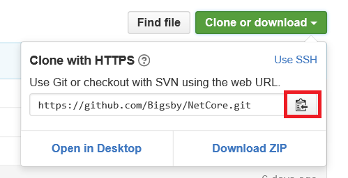

Clone the GitHub Repository
To clone (and track) a repository in GitHub these steps:
-
Go to repository page
Open a web browser and go to the repository page, in this case https://github.com/Bigsby/NetCore
As no extra software was installed, browser here means: Microsoft Edge for Windows, IceWeasel for Debian and Safari for Mac OS X
Other Git providers, like Visual Studio Online (now called Team Services) or Bitbucket also provider a similar button or, at least, the URL to copy and use to clone.
-
Copy the repository URL
Click the button that says "Clone or download" and, then, click the button next to the URL to copy the URL to the clipboard
 -
Clone the Repository
In the CLI (Command Line Interface, yes, Terminal for Linux and Mac OS and Command Prompt for Windows) run:
$ git clone https://github.com/Bigsby/NetCore.gitThe output should look like this:
Cloning into 'NetCore'... remote: Counting objects: 342, done. remote: Compressing objects: 100% (289/289), done. remote: Total 342 (delta 102), reused 260 (delta 38), pack-reused 0 Receiving objects: 100% (342/342), 5.53 MiB | 1.17 MiB/s, done. Resolving deltas: 100% (102/102), done. Checking connectivity... done. -
Confirm Clonage
Browser the folder. In the CLI, run:
$ cd NetCoreThe folder should contain, at this point, 1 folder:
- consoleApp
...and 3 files:
- .gitignore
- LICENSE
- README.md
If you run this after I complete the next steps in these series, more content should display.